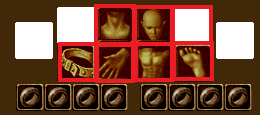

魔力注入システム
基本システム図案書の入手方法
図案書効果一覧
ボス祭壇システム
雑学
基本システム
魔力注入とは、図案書を使って好きな装備でセットアイテムを作れるシステムです。図案書は防具部位(武器, 補助武器,指以外)に付与可能です。(画像赤枠部分)
部位が対象であれば、ユニークアイテム以外でも付与可能です。

同種の図案書を使ったアイテムを2, 4, 5部位装備するごとに、セット効果が発揮されます。
※ 異なる図案書を同時に活用できます。
例えば、レア等級図案書の1つ『一角獣の尻尾』は以下のような効果になっています。

5部位付与した装備を装着することで、強力な効果を発動できます。
※ 錬成/再錬成時に図案書効果が削除されますのでご注意ください。
※ 類似するBFOP(ブラックファイヤーオプションは錬成時にも削除されません。)
※ 図案書効果は鏡の魔法書 / 再構成 / 増幅 / OP解除しても残ります。
※ 図案書が付与されたアイテムは鏡可能
※ 図案書効果を付与したアイテムは取引可
装着は該当図案書をクリック後に対象アイテムを選択してダイアログで[はい]を選択。


1段階目の場合のみ等級問わず100%の確率で成功します。
最大5段階まであり、段階・等級(ノーマル, レア, スペシャル)が上がるほど成功確率が下がっていきます。
※ 段階を上げるには既に付与された図案書に同じ図案書を適用することで、一定確率で成功します。
※ すでに魔力注入がされた装備に、違う効果の図案書を使用しての上書きもできます。

注入成功時、魔力注入欄に付与された効果が記載されます。
セット効果の発動は、低いほうの揃っている段階が優先されます。
たとえば、5部位に『一角獣の尻尾』という図案書を使用し、1段階が3つ、5段階が2つあったとします。
この場合、1段階の5部位装備時のセット効果が発動します。(5段階2セットの効果は発動しません。)

セット効果が発動した注入効果はF2「称号欄」より確認できます。
5部位に『ファミリアの報恩』を、2部位に『ソーサラーの秘技』を装着して2種類の図案書効果を発動することもできます。
(この場合、称号欄から2つの図案書効果を確認できます。)
各図案書のセット効果については図案書効果一覧より御覧ください。
図案書製作
図案書を入手する経路はいくつかあります。1. レア等級白紙図案書、レア等級選択図案書などから入手
ロトボックスや各種イベント・キャンペーンで入手できます。
白紙の図案書は該当等級の図案書をランダムに(ほぼ等確率)入手でき、
選択図案書は該当等級の図案書から任意の1つを選択して入手できます。
※ 但し、実装直後の図案書などで選択できないものもあります。

※画像は2019.7.9時点でスペシャル等級選択図案書を使用した時のものです。
2. 図案書を製作して入手
作りたい図案書の等級に応じて必要な素材を集めて、NPCラサ(古都 100.51)に話して作成します。

各等級ごとに必要となる素材は以下の通りです。
| 図案書の等級 | 製作に必要な材料 | |
|---|---|---|
 |
ノーマル | 魔力インク 100個 |
 |
レア | 魔力インク 250個 異界の強化石 1個 |
 |
スペシャル | 魔力インク 1000個 |
全ての等級の図案書製作には成功確率が存在します。
100%ではなく、等級が上がるほど失敗する確率が高くなります。
各素材は以下の方法で入手できます。
魔力インク

狩りで入手した水色アイテム(オプション付アイテム)をラサまたは魔力溶解剤で溶かして抽出する。
また、各種イベントやクエスト、祭壇システムなどでも入手できます。
取引可のため、露店から購入することも可能。最大255個スタック。
※NPC商人が販売している水色品からは抽出できません。
狩場で水色品を多く入手するには運のステータスが重要です。
(運801以上を目安にすると満足のいくドロップが期待できそうです。)
実際に、狩りで入手した水色品を魔力インク溶解剤を使って分解してみます。

魔力インク溶解剤はインベントリに入ります。スタック20個
ラサより1個2万ゴールドで購入できます。(1マスで40万ゴールド)
右クリックで「使用」を選択。

アイテムを選択。

[はい]を選択。

抽出は必ず成功します。
抽出時、付与されてるオプションの数だけ魔力インクを入手できます。(1~3個)
異界の清水

特定の秘密(BF秘密、逃亡者秘密など)クリア時、
ブラックファイヤー関連のマップで狩りをしていると稀にインベントリに自動的に入ってきます。
任意のBFUを分解することでも300個獲得可能です。
取引不可、銀行預け入れ不可
異界の強化石

ブラックファイヤー外郭にて自作するか、
コイン商ペル(冒険家協会ブルンネンシュティグ本部45.14)で冒険団コインと交換して入手可能。
または、スタイン邸宅フォル・スタイン(11.11)で試練の証50個と交換できます。
ロトボックスから出現する密封された異界の強化石からも取得可能です。
取引不可、銀行預け入れは可
タティリスの心臓

メインクエスト Season2報酬、またはボス祭壇システムで低確率で手に入ります。
火炎のボックスイベントなどで入手できることもあります。
タティリスの根源

※現在はメインクエスト Season2からは入手不可 火炎のボックスイベントなどで入手できます。
ラサの刻印スクロール
火炎のボックスイベントなどで入手可能。図案書作成の成功確率を向上できます。

3. メインクエストシーズン2の繰り返しクエストの報酬
メインクエストシーズン2の繰り返しクエストにおける報酬の1つとして、ベールの歌姫 アーミルより図案書を入手できます。

【基本報酬】
ノーマル等級白紙図案書、レア等級白紙図案書、スペシャル等級白紙図案書のうち、ランダムで１種類１個獲得
【追加報酬】
タティリスの心臓を１個獲得(スペシャル図案製作に利用)
※2019.6.26アプデ前はタティリスの根源も入手できました。
図案書セット効果一覧
(2019.6.26追記) アップデートにより、タティリスの根源の代わりにタティリスの心臓が必要になります。
古都ブルンネンシュティグにいるNPC「ラサ」(座標101,51付近)にて、タティリスの根源をタティリスの心臓へ交換可能となります。
ボス祭壇システム
スペシャル等級の図案書の材料として必要な「タティリスの心臓」は、 タトバ山東部地域(1-1-1-8-4)とデフヒルズ西部地域(1-1-1-8-1)の祭壇に
不思議な紺碧の壺5個をささげて召喚されるモンスターから一定確率で獲得できます。

デフヒルズ西部地域(1-1-1-8-1) (101,73)付近

タトバ山東部地域(1-1-1-8-4) (80,23)付近

不思議な紺碧の壺5個をささげます。

自キャラレベルと同Lvモンスターが出現するので、討伐します。
[補足]
Lv600以上のキャラクターが召喚を行えます。
召喚されたボス祭壇モンスターは、召喚したキャラクターだけが攻撃できます。
討伐時の報酬は召喚したキャラクターだけが獲得できます。
パーティーを組んでいても、経験値やアイテムの共有はできません。
モンスターは召喚後、3分以内に倒せなければ消滅します。
マップ上に召喚されたボス祭壇モンスターが10体以上いる場合は、新たに召喚できません。
1キャラクターが一度に召喚できる祭壇モンスターは1体のみです。
報酬はLvごとの経験値と魔力インク、低確率でタティリスの心臓、経験値スクロール(上級)を獲得できます。
雑学
NPC ラサ(古都100,51)による魔力注入システムに関する説明を抜粋します。


NPC カズ(デフヒ西部 101,73)の会話を抜粋します。


特製魔力インク溶解剤
日本未実装？公式ページには記載あり。魔力インクを生成するにあたって、期間中何度でも使える特製魔力インク溶解剤というアイテムが存在します。
期間中何度でも使用できるため、街にインクを買いに行かなくてよくなる便利アイテムです。
韓国側での効果は以下の通りです。
| 特製魔力インク溶解剤[7日] | 特製魔力インク溶解剤[30日] | |
|---|---|---|
| 1000ウォン | 3000ウォン | |
|
<説明> 魔力インク製造に必要な神秘的な溶解剤。オプションが宿ったアイテムを溶かしてオプションの魔力を神秘的なインクで作る。 特別な魔法がかかっているので決まった期間中は何度でも使うことができる。 オプション付加アイテム溶解時、魔力インクを20％追加獲得可能。 <効果> 使用時消耗しないで有効期間の間、持続的にオプション装備溶解が可能で魔力インクを追加獲得可能。取引不可。 |
||
[更新] 2019.6.26アプデ 図案書２種類追加、全体的に難易度緩和、性能向上
[参考] 魔力注入システム(公式サイト)
[参考] 祭壇システム(公式サイト)